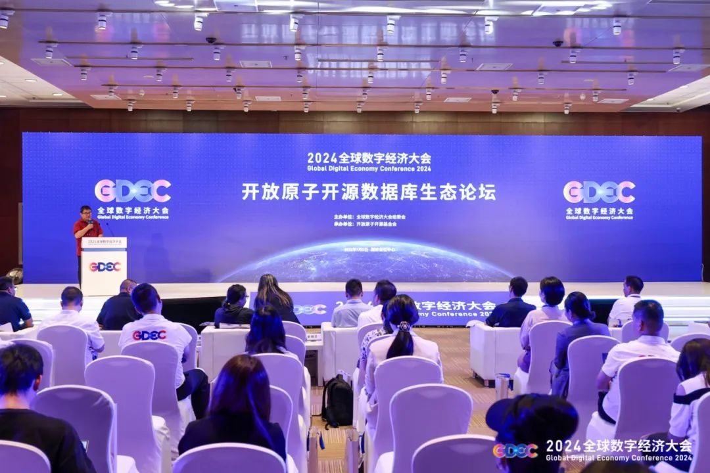
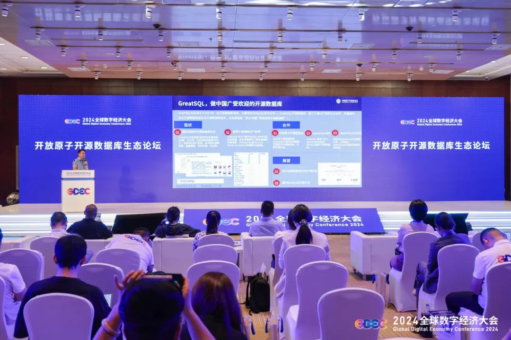
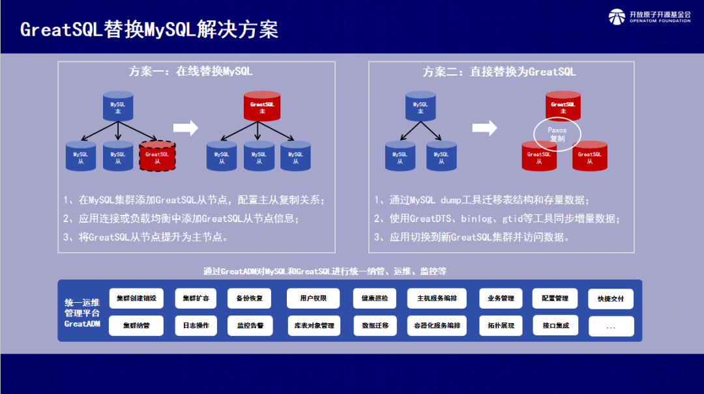
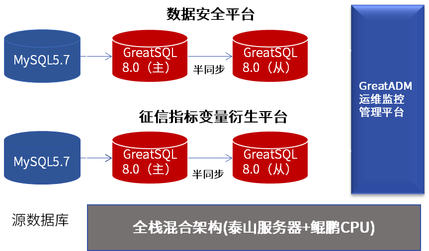

展会 | GreatSQL亮相全球数字经济大会 开源数据库赋能金融数字化转型
7月5日，以“开源生态筑基础，数字经济铸未来”为主题的2024全球数字经济大会——开放原子开源数据库生态论坛在北京成功举办。GreatSQL社区作为开源产业的积极贡献力量之一，受邀亮相大会，并带来开源数据库赋能金融数字化转型的成果实践。
作为“2024年全球数字经济大会”重要议题之一，开放原子开源数据库生态论坛聚集政界领导、行业专家、企业领袖及技术精英，共同探讨开源数据库赋能金融数字化转型的最新趋势、成功案例、技术创新与未来战略。开放原子开源基金会副秘书长辛晓华、北京市经信局信息化与软件服务业处副处长赵祥伟等领导出席活动。

GreatSQL作为万里数据库主导成立的开源数据库社区，在本次论坛中，万里数据库售前总监刘俊锋以“GreatSQL助力金融数字化提效”为主题进行了演讲分享，与泰康在线、腾讯云、天翼云等业内专家领袖同台分享自身领域的前沿技术和成果实践。
刘俊锋提及，MySQL常年在DB Engines上位列第二，仅次于Oracle，是全球最流行的开源数据库。据ShadowServer相关收集数据预估，全球在运行的MySQL实例约800万，而其中，MySQL 5.7版本占比高达46.7%。尤其去年10月，MySQL5.7版本的停服，进一步加速了金融行业国产数据库替换的步伐。

面对国内MySQL替换的大量需求与关切，GreatSQL提供在线替换MySQL或直接替换为GreatSQL的高效替换方案，期待为大家打造最适合需求的产品与解决方案。

GreatSQL社区2021年由万里数据库主导成立，致力于成为中国广受欢迎的开源数据库社区。社区主要开源项目GreatSQL开源数据库基于MySQL技术路线，对组复制（MGR）进行了大量高可用能力方面的改进提升，并基于Rapid引擎轻松实现HTAP解决方案，以满足金融行业对高可用性和高性能的严格要求，成为MySQL或Percona Server for MySQL的理想替代选择。
在金融数字化实践方面，GreatSQL成功支撑了梅州客商银行数据安全平台、征信指标变量衍生平台业务系统平稳上线与运行，并提供数据库本地化服务。GreatSQL的金融级高可用能力再次得到事实验证，保障客户的数据库供应链安全。

GreatSQL采用双活高可用方案和主备建设数据库方案，不仅为数据安全平台的数据质量管理提供了元数据支撑以及数据质量监控、数据质量概览、质量问题查询三个核心功能，还支撑了征信指标变量衍生平台核心的大盘展示、指标管理、数据源管理、监控管理、分析查询、计费查询、离线管理、权限中心等8大功能模块，为业务系统的风控决策提供数据支撑。
此外，GreatSQL开源数据库新增多个安全特性，包括国密算法支持等，能满足银行数据安全要求，并深度适配国产服务器、芯片、操作系统等上下游生态链，完美适应国产技术生态，满足客户全栈信创要求。
开源是驱动数据库技术迭代创新的重要力量，全球开源数据库的部署规模已超越商业数据库。我国数据库市场展现出强劲增长势头，开源比例逐年上升。开放原子开源基金会是首家国家级开源基金会，致力于服务好国内开源项目、产业和广大开发者，汇聚开源领域各行业专家，共建开放、共赢的开源产业生态。
GreatSQL作为开放原子开源基金会旗下孵化项目，未来将继续在基金会的引领下，积极为开源产业建言献策，贡献数据库技术力量，助力构建开放、共赢的开源数据库及上下游生态体系，为开源生态的繁荣发展添砖加瓦。